How neural networks represent functions and how they are trained, from a single gradient step to modern optimizers.
Scroll within the panel to move through the slides; scroll the page to reach the figures below. Jump by subchapter on the left.
One representative figure per topic, generated by 02_lectures_code/06.ipynb.
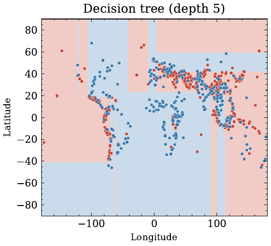
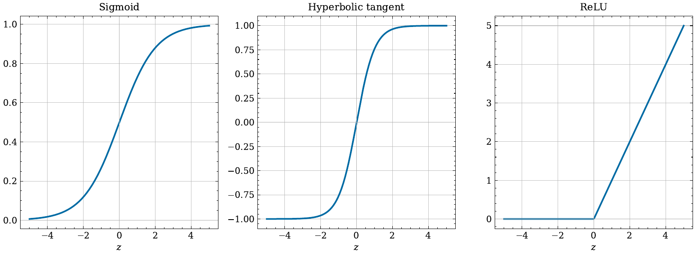
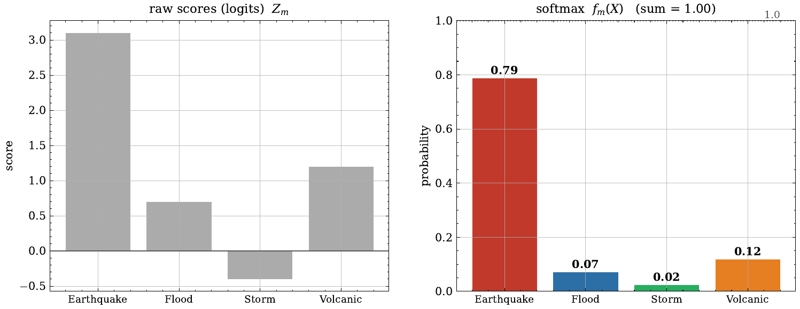
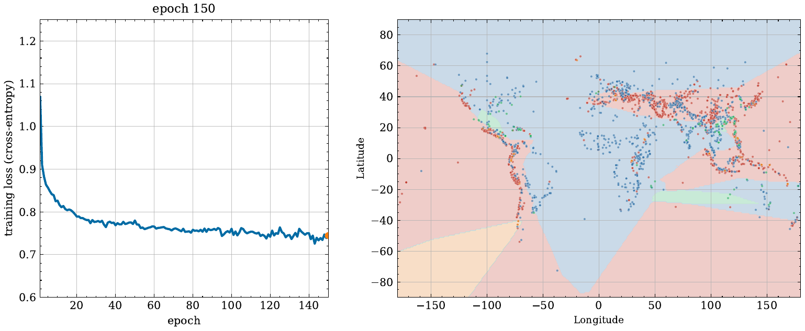
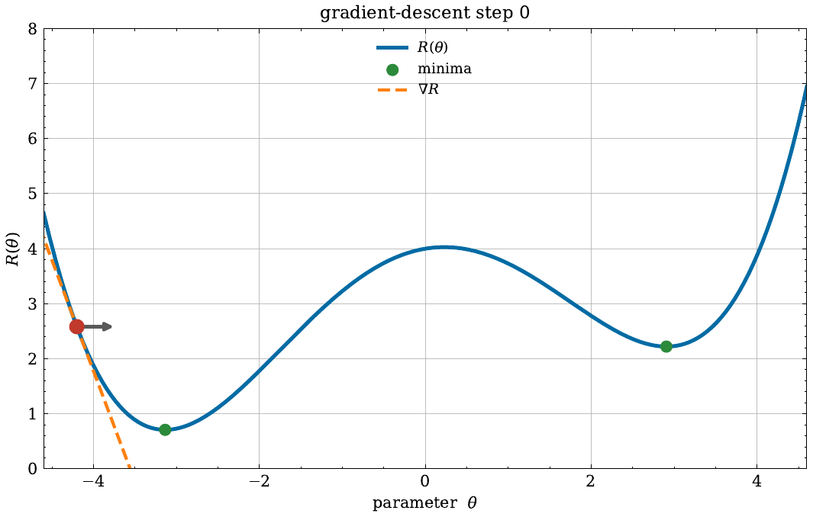
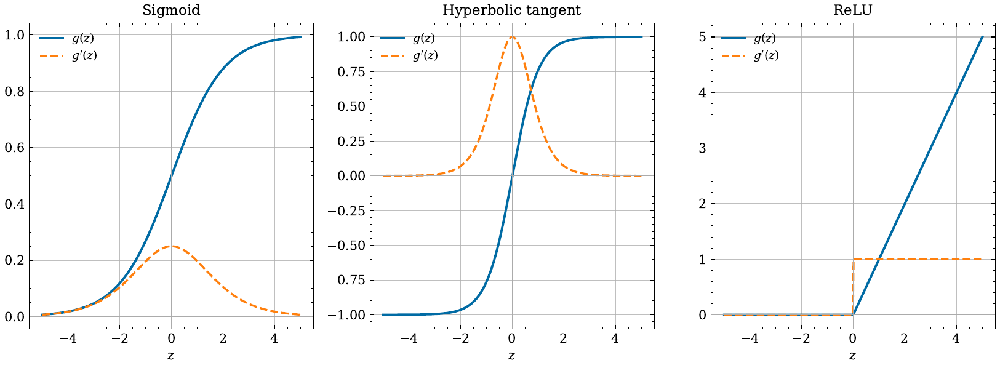
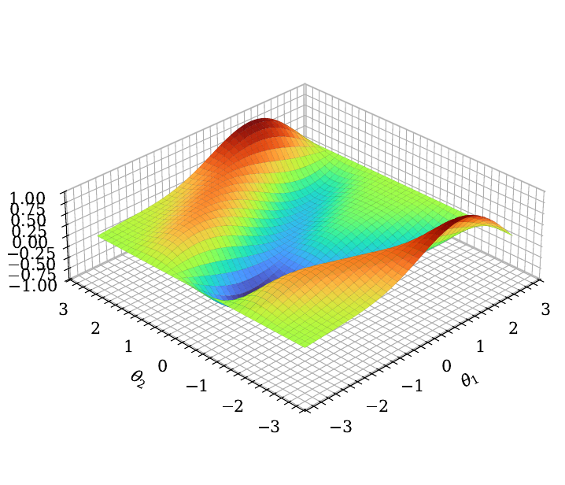
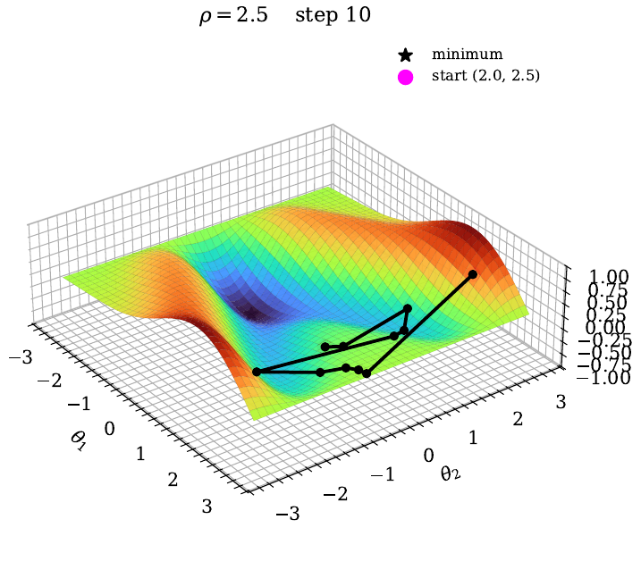
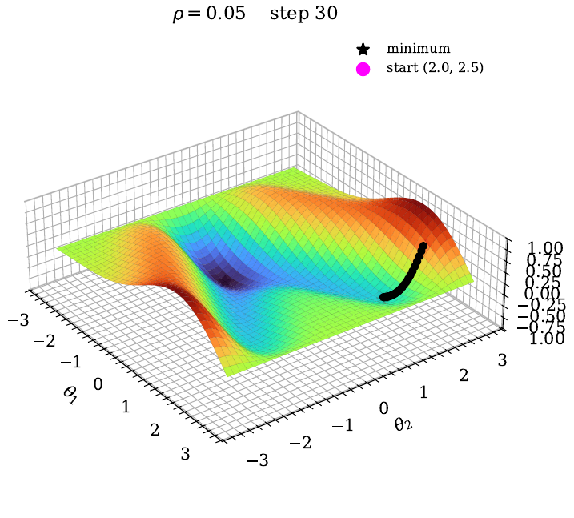
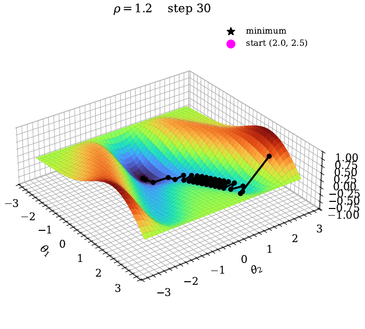
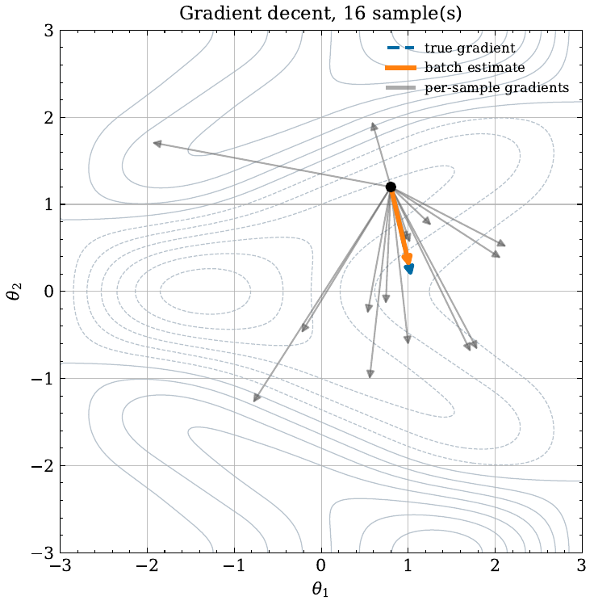
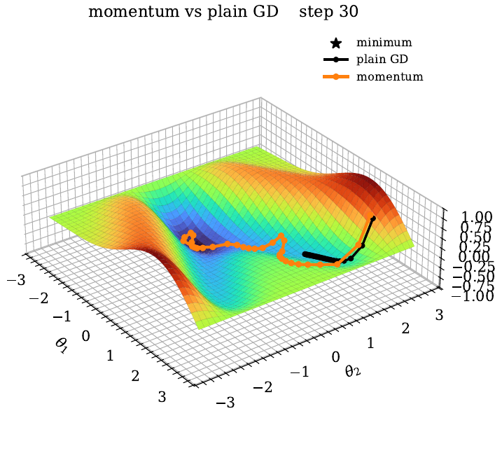
Statistical Learning (FIM), WI001287, TUM School of Management. Content developed by Lars Böcking.